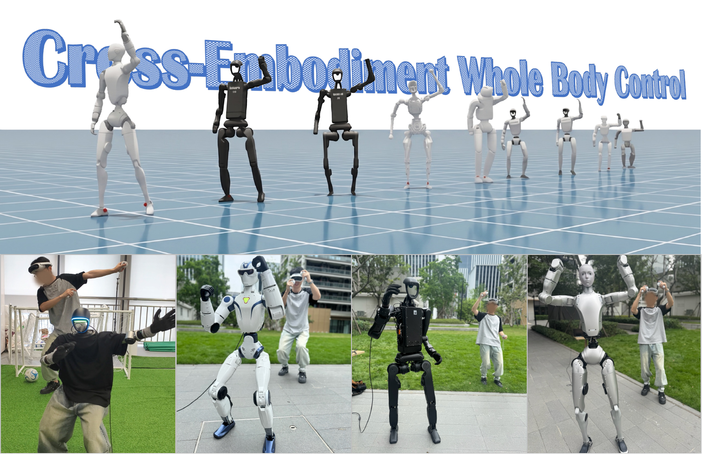
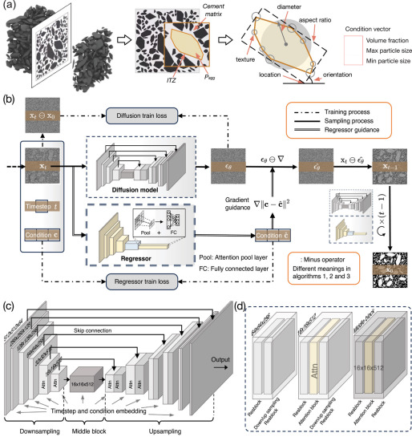
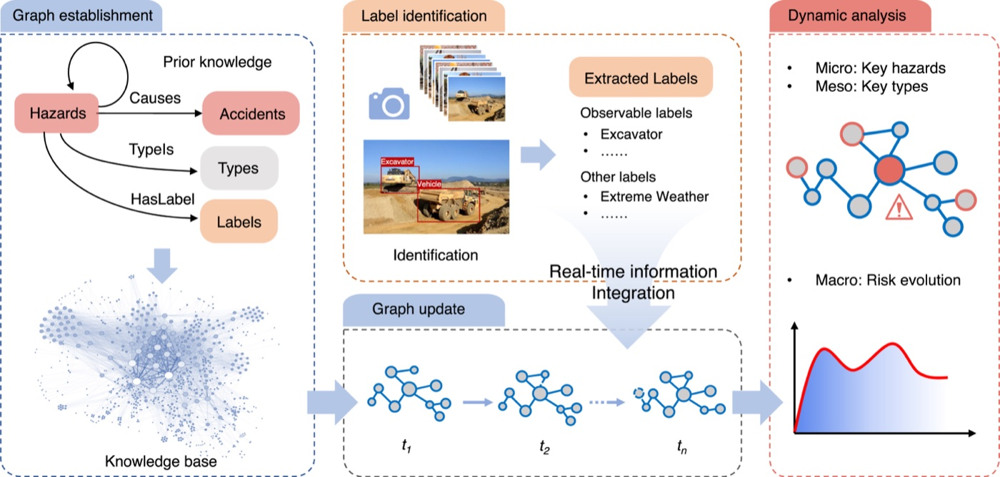
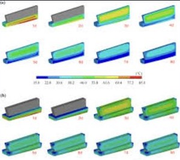
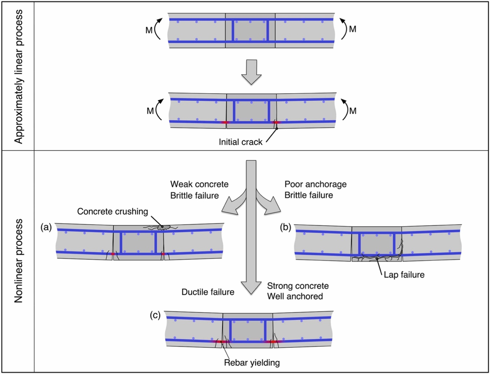

X-WBC was accepted to CoRL 2026.
Juntong Zhang
张俊童
I am a third-year Ph.D. student at the Shanghai Innovation Institute and Tongji University, affiliated with Logos Intelligence Lab. My research focuses on humanoid robots and embodied intelligence, with the goal of freeing people from labor. Earlier in my studies, I explored AI for science and engineering.
Portrait
News
Selected updatesOur diffusion framework for concrete mesostructure generation was published in CACAIE.
Work on early-age cracking in concrete cap beams was published in Structural Concrete.
Our dynamic hazard analysis work was published in Automation in Construction.
Robotics
Selected work
CoRL 2026
X-WBC: A Cross-Embodiment Foundation Model for Humanoid Whole-Body Control
1Shanghai Innovation Institute · 2Tongji University · 3Fudan University · 4Logos Intelligence Lab
A shared whole-body controller that learns reusable human-motion semantics from mixed multi-robot experience while retaining embodiment-specific execution.
AI for Science and Engineering
Selected work
CACAIE · 2025
Efficient and physically consistent generation of 2D concrete mesostructures via a regressor-guided diffusion framework
Regressor-guided diffusion for controllable and efficient material generation.

Automation in Construction · 2025
Dynamic hazard analysis on construction sites using knowledge graphs integrated with real-time information
Multi-level construction hazard graphs that update with changing site conditions.

Structural Concrete · 2025
Numerical simulation and control of early-age cracking in a concrete cap beam
Construction-process simulation considering high-strength concrete and formwork constraints.

Structures · 2024
Predicting failure process of precast deck joints using a physics-guided LSTM model
Physics-guided sequence prediction for structural response and failure processes.